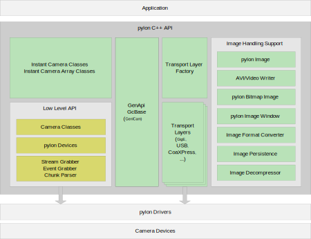
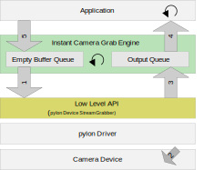
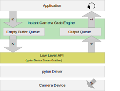

Advanced Topics#
Architecture of pylon#
This section gives a short introduction to the most important concepts of the pylon C++ API.

Transport Layers#
The term 'transport layer' is used as an abstraction for a physical interface such as USB, GigE, or Camera Link. For each of these interfaces, there are drivers providing access to camera devices. pylon currently includes several different transport layers:
- BaslerGigE for Gigabit Ethernet cameras using the GigE Vision protocol
- BaslerUsb for USB3 Vision-compliant cameras
- BaslerGenTlCxp for CoaXPress 2.0 compliant cameras (not available on Linux ARM)
- BaslerCamEmu for camera emulation support
- BaslerCameraLink for Camera Link cameras using the CL serial interface (limited to camera configuration only, only available on Windows)
Transport Layer objects are device factories and are used to:
- Discover devices (this process is also called device enumeration)
- Create pylon Devices used to access camera devices
- Destroy pylon Devices
- Access transport layer specific parameters
Transport Layer Factory#
An application program does not access transport layer implementations directly. The Transport Layer Factory is used to create Transport Layer objects, each of which represents a transport layer. Additionally, the Transport Layer Factory can be used as a device factory to create and destroy pylon Devices for all transport layers.
GenApi Node Maps#
For camera configuration and for accessing other parameters, the pylon API uses the technologies defined by the GenICam standard hosted by the European Machine Vision Association (EMVA). The GenICam specification (http://www.GenICam.org) defines a format for camera description files. These files describe the configuration interface of GenICam compliant cameras. The description files are written in XML (eXtensible Markup Language) and describe camera registers, their interdependencies, and all other information needed to access high-level features such as Gain, ExposureTime, or ImageFormat by means of low level register read and write operations.
The elements of a camera description file are represented as software objects called Nodes. For example, a node can represent a single camera register, a camera parameter such as Gain, a set of available parameter values, etc. Each node implements the GenApi::INode interface.
The nodes are linked together by different relationships as explained in the GenApi standard document available at www.GenICam.org. The complete set of nodes is stored in a data structure called node map. At runtime, a node map is instantiated from an XML description.
In pylon, node maps are not only used to represent camera device parameters. Parameters of other pylon objects such as Transport Layer objects or the Image Format Converter are also exposed via GenApi node maps.
Examples:
- The
Pylon::CInstantCameraclass has thePylon::CInstantCamera::GetNodeMap()method, which returns the node map containing all GenApi nodes representing the whole set of camera parameters. - The
Pylon::CImageFormatConverter::GetNodeMap()method is used to access the Image Format Converter's parameters.
Low Level API#
All transport layers implement the Low Level API interface. This means that for all transport layers, things can be handled in the same way. The Low Level API section lists all Low Level API classes.
Low Level API pylon Devices#
In pylon, physical camera devices are represented by pylon Devices.
Stream Grabbers#
The pylon architecture allows a camera object to deliver one or more streams of image data. To grab images from a stream, a stream grabber object is required. Stream grabber objects can't be created directly by an application. They are managed by camera objects.
Event Grabbers#
Basler GigE Vision and USB3 Vision cameras can send event messages. Event Grabber objects are used to receive event messages.
Chunk Parsers#
If the so-called Chunk Mode is activated, Basler Cameras can send additional information appended to the image data. When in Chunk Mode, the camera sends an extended data stream which consists of image data and additional information such as a frame number or a time stamp. The extended data stream is self-descriptive. pylon Chunk Parser objects are used for parsing the extended data stream and for providing access to the added information.
Instant Camera Classes#
An Instant Camera provides convenient access to a camera device while being highly customizable. It allows to grab images with few lines of code providing instant access to grabbed images from a camera device. Internally a pylon Device is used. A pylon Device needs to be created and attached to the Instant Camera object for operation. The additional CBaslerUniversalInstantCamera class provides more convenient access to the parameters of the camera. Furthermore, the Instant Camera Array classes ease programming for image grabbing from multiple camera devices.
Image Handling Support#
Besides the Instant Camera classes used for grabbing images pylon offers additional Image Handling Support support for handling grabbed images. There are an image class , an image format converter , the loading and saving of images , Windows bitmap image support, an image window , an avi writer , a video writer , and an image decompressor .
Settings for Building Applications with pylon#
The installation package for the pylon SDK installs everything needed to develop applications, e.g. header and lib files, to the subdirectory 'Development'. In the following paragraphs, we denote the folder where the pylon SDK was installed as <SDK ROOT>, which may proxy for, e.g., C:\Program Files\Basler\pylon
As part of the pylon SDK, sample programs are also copied to the Development directory. These samples include Microsoft Visual Studio 2010 solution and project files demonstrating how to set up the development environment to build pylon-based applications.
Environment Variables#
If the SDK component is installed, the pylon installation procedure sets the following environment variable:
- <PYLON_DEV_DIR>: Contains the path to the Development directory. Used to locate header and lib files required for building.
Additionally, the pylon installer extends the PATH environment variable by the following directories:
For 32-bit Windows operating systems:
- <SDK ROOT>\Runtime\Win32
For 64-bit Windows operating systems:
- <SDK ROOT>\Runtime\Win32
- <SDK ROOT>\Runtime\x64
Extending the PATH environment variable is required to locate the pylon and GenICam dynamic link libraries (.dll files) at runtime.
Include Path#
The following directories must be added to the compiler's include path (Configuration Properties -> C/C++ -> General -> Additional Include Directories):
- <PYLON_DEV_DIR>\include
Library Path and Library Files#
Applications using the pylon C++ API must be linked against several import libaries. This is automatically done by including the PylonIncludes.h file that contains the necessary #pragma comment lib statements.
#include <pylon/PylonIncludes.h>
The following directories must be added to the linker's search path for .lib files (Configuration Properties -> Linker -> General -> Additional Library Directories).
For building 32 bit applications:
- $(PYLON_DEV_DIR)\lib\Win32
For building 64 bit applications:
- $(PYLON_DEV_DIR)\lib\x64
Compiler Settings#
The pylon API relies on C++ runtime type information. To compile applications using the pylon API, the generation of runtime type information must be enabled for the compiler. For the Visual Studio compiler, either use the /GR compiler switch or set the Enable Runtime Type Info parameter in the Visual Studio project settings to 'yes' (Configuration Properties->C/C++->Language property page).
Because C++ exceptions are used for error handling, C++ exceptions must be enabled in the compiler settings (default setting for Visual Studio 2010 or later).
Debugging pylon Applications Using GigE Cameras#
Heartbeat#
By default, pylon sends a heartbeat signal to all GigE cameras and the cameras then respond with a heartbeat signal of their own going back to pylon. If the cameras don't receive a heartbeat signal from pylon in the defined interval, the camera doesn't respond to commands from pylon anymore and is disconnected.
Heartbeat During Debugging#
When you work in debugging mode in pylon and hit a breakpoint in your pylon application, the debugger suspends all threads including the one sending the heartbeats. Thus, when you debug your pylon application and single-step through your code, no heartbeats are sent to the camera and the camera closes the connection.
To work around this, pylon detects when you debug your pylon application and extends the heartbeat timeout to one hour. This allows you to single-step through your pylon application without the camera closing the connection.
Extending the heartbeat timeout has the following side effect: When you terminate your pylon application using the debugger while the camera is opened and you restart your pylon application right after terminating it, you may get an error stating that the camera is currently in use. This is so, because due to the forced termination of the pylon application, pylon couldn't inform the camera of the termination and did not close the connection. As a result, the camera doesn't accept any new connections until the heartbeat timeout has elapsed or is restarted.
PylonGigEConnectionGuard#
To assist debugging pylon applications while using GigE cameras, you can use the PylonGigEConnectionGuard. The PylonGigEConnectionGuard is a small application that starts automatically when you debug your pylon application and open a connection to a GigE camera. If you close the connection between pylon and the camera, pylon stops the PylonGigEConnectionGuard. In case your pylon application terminates unexpectedly, i.e. by using the debugger, pylon's PylonGigEConnectionGuard automatically detects the unexpected termination and closes the connection to the camera.
If pylon detects the debugging mode, pylon does the following:
- pylon enables the PylonGigEConnectionGuard.
You can override this default behavior by setting the ConnectionGuardEnable node of the camera transport layer in your code. * pylon sets the heartbeat timeout to 60 minutes.
You can override this value by setting the heartbeat timeout value HeartbeatTimeout in the camera transport layer in your code or by setting the PYLON_GIGE_HEARTBEAT environment variable.
If needed, you can modify these default values in your code before opening the camera by setting the values ConnectionGuardEnable and /or the HeartbeatTimeout nodes of the transport layer:
// retrieve the ConnectionGuardEnable node from the transport layer node map
CBooleanParameter guard(camera.GetTLNodeMap(), "ConnectionGuardEnable");
// set the value explicitly to true to always use the PylonGigEConnectionGuard. (Note: Only GigE cameras have a "ConnectionGuardEnable" node)
guard.TrySetValue(true);
// retrieve the heartbeat node from the transport layer node map
CIntegerParameter heartbeat(camera.GetTLNodeMap(), "HeartbeatTimeout");
// set heartbeat to 600 seconds. (Note: Only GigE cameras have a "HeartbeatTimeout" node)
heartbeat.TrySetValue(600*1000);
If you want to configure the heartbeat timeout using an environment variable, set an environment variable named PYLON_GIGE_HEARTBEAT and set its value to the desired timeout in milliseconds. If you are working in Visual Studio, you can set the environment variable in the project settings for your debugging session: In the project properties, select Configuration Properties->Debugging->Environment.
Enumerating and Creating pylon Devices#
pylon offers two ways to enumerate and create pylon Devices. The first approach uses the Transport Layer Factory to enumerate cameras across multiple transport layers. The second approach lets a Transport Layer object enumerate and create pylon Devices for a specific transport layer. Before describing the different enumeration schemes, the terms Device Class and Device Info object are introduced.
Device Classes#
Each transport layer can create a specific type of pylon Device. For example, the PylonGigE transport layer will create pylon Devices representing GigE Vision cameras. Each type of device is associated with a unique identifier string called Device Class. The device class identifier can be found in the DeviceClass.h header file.
Device Info Objects#
The device enumeration procedure returns a list of Device Info objects. The base class for Device Info objects is Pylon::CDeviceInfo. A Device Info object uniquely describes a camera device. Device Info objects are used by a Transport Layer and the Transport Layer Factory to create camera objects representing the device described by the Device Info objects.
A Pylon::CDeviceInfo object stores a set of string properties. The data type of the values is Pylon::String_t. The following properties are available for all Device Info Objects:
| Name | Description |
|---|---|
| FriendlyName | A human readable name for the device (e.g. the camera's model name). Friendly names are not unique. |
| FullName | A unique identifier for the device. No two devices will have the same full name. |
| VendorName | The name of the vendor. |
| DeviceClass | Each transport layer can create a specific type (or class) of camera devices (e.g., USB or GigE Vision devices). The device types are identified by the Device Class property. |
| SerialNumber | The device's serial number. The availability of the device serial number is not guaranteed during the enumeration process, so the Serial Number Property may be undefined. |
| UserDefinedName | For some device classes, it is possible to assign a user defined name to a camera device. The value of this property is not necessarily unique. |
| DeviceFactory | The unique full name of the Transport Layer object that can create the device. |
In addition, specific transport layers will require additional properties. These properties can be accessed in a generic way by using the Pylon::IProperties interface.
Using the Transport Layer Factory for Enumerating Cameras#
The Pylon::CTlFactory::EnumerateDevices() method is used to retrieve a list of all available devices, regardless of which transport layer is used to access the device. The list contains Device Info objects that must be used for creating Camera objects.
The returned lists are of the Pylon::DeviceInfoList_t type and are used similarly to the C++ Standard Library std::vector class.
The following example prints out the unique names of all connected devices:
#include <pylon/PylonIncludes.h>
#include <ostream>
using namespace Pylon;
using namespace std;
int main()
{
PylonAutoInitTerm autoInitTerm;
CTlFactory& TlFactory = CTlFactory::GetInstance();
DeviceInfoList_t lstDevices;
TlFactory.EnumerateDevices( lstDevices );
if ( ! lstDevices.empty() ) {
DeviceInfoList_t::const_iterator it;
for ( it = lstDevices.begin(); it != lstDevices.end(); ++it )
cout << it->GetFullName();
}
else
cerr << "No devices found!" << endl;
return 0;
}
The Transport Layer Factory provides a Device Info object and can be used to create Camera objects. The following example illustrates how to create a Camera object for the first element in the device list:
CInstantCamera camera( TlFactory.CreateDevice( lstDevices[0] ) );
Never call free or delete on a Pylon::IPylonDevice pointer created by the Transport Layer Factory. Instead, use the Pylon::CTlFactory::DestroyDevice() method to delete an IPylonDevice pointer.
Using the Transport Layer Factory to Create a Transport Layer#
A list of all available transport layers can be retrieved by calling the Pylon::CTlFactory::EnumerateTls() method. This method fills a list with Transport Layer Info objects (Pylon::CTlInfo). The data structures are very similar to Device Info objects. Transport Layer Info objects are used as arguments for the Pylon::CTlFactory::CreateTl() method that creates Transport Layer objects. The method returns a pointer of the Pylon::ITransportLayer type.
Never call free or delete on a ITransportLayer pointer created by the Transport Layer Factory. Instead, use the Pylon::CTlFactory::ReleaseTl() method to free Transport Layer objects.
Using a Transport Layer Object for Enumerating Cameras#
Transport Layer objects can be used to enumerate all devices accessible by a specific transport layer. Transport Layer objects are created by the Transport Layer Factory. This is illustrated in the following example, which creates a Transport Layer object for the PylonGigE transport layer:
#include <pylon/PylonIncludes.h>
using namespace Pylon;
int main()
{
PylonAutoInitTerm autoInitTerm;
CTlFactory& TlFactory = CTlFactory::GetInstance();
ITransportLayer* pTl = TlFactory.CreateTl( BaslerGigEDeviceClass );
return 0;
}
As described above, Transport Layer objects can also be created by passing in a Transport Layer Info object.
The Transport Layer Object is now used for enumerating all of the devices it can access:
DeviceInfoList_t lstDevices;
pTl->EnumerateDevices( lstDevices );
if ( lstDevices.empty() ) {
cerr << "No devices found" << endl;
exit(1);
}
Pylon::ITransportLayer::EnumerateDevices adds the discovered devices to the passed-in Device Info List.
The Transport Layer object is now used for creating a Camera object. In the following example, a Camera Object for the first enumerated camera device is created:
CInstantCamera camera( pTl->CreateDevice( lstDevices[0] );
Never call free or delete on a Pylon::IPylonDevice pointer created by the Transport Layer Factory. Instead, use the Pylon::CTlFactory::DestroyDevice() method to delete an IPylonDevice pointer.
Applying a Filter when Enumerating Cameras#
For enumerating a range of devices that have certain properties the EnumerateDevices method applying a filter can be used. To define the properties a filter list with device info objects can be passed. A camera is enumerated if it has the properties of at least one device info object in the filter list. The following example enumerates all cameras with the model names in the filter list.
#include <pylon/PylonIncludes.h>
#include <ostream>
using namespace Pylon;
using namespace std;
int main()
{
PylonAutoInitTerm autoInitTerm;
CTlFactory& TlFactory = CTlFactory::GetInstance();
DeviceInfoList_t filter;
filter.push_back( CDeviceInfo().SetModelName( "acA1920-40uc" ));
filter.push_back( CDeviceInfo().SetModelName( "acA2500-14gm" ));
DeviceInfoList_t lstDevices;
TlFactory.EnumerateDevices( lstDevices, filter );
if ( ! lstDevices.empty() ) {
DeviceInfoList_t::const_iterator it;
for ( it = lstDevices.begin(); it != lstDevices.end(); ++it )
cout << it->GetFullName();
}
else
cerr << "No devices found!" << endl;
return 0;
}
Creating Specific Cameras#
For creating a specific device an info object must be set up with the properties of the desired device. In the following example the serial number and the device class are used for identifying the camera. Specifying the device class limits the search to the correct transport layer. This saves computation time when using the transport layer factory.
CTlFactory& TlFactory = CTlFactory::GetInstance();
CDeviceInfo di;
di.SetSerialNumber( "20399956" );
di.SetDeviceClass( BaslerUsbDeviceClass );
CInstantCamera camera( TlFactory.CreateDevice( di ) );
The above example can also be written in one line:
CInstantCamera camera( CTlFactory::GetInstance().CreateDevice( CDeviceInfo().SetDeviceClass( BaslerUsbDeviceClass ).SetSerialNumber( "20399956" )) );
The CreateDevice method will fail when multiple devices match the provided properties. If it is required to create any one of multiple devices the CreateFirstDevice method can be used.
The following sample illustrates how to create a device object for a GigE camera with a specific IP address:
#include <pylon/PylonIncludes.h>
//....
CTlFactory& TlFactory = CTlFactory::GetInstance();
CDeviceInfo di;
di.SetIpAddress( "192.168.0.101");
CInstantCamera camera( TlFactory.CreateDevice( di ) );
Grab Strategies#
The following grab strategies involve the triggering of the camera device. Depending on the cofiguration of the camera device the following trigger modes are supported.
- An external trigger, e.g. via digital I/O
- A software trigger command
- An internal trigger (so-called free running mode).
Additional information regarding this topic can be found in the code sample Grab_Strategies and in the parameter documentation of the Instant Camera .
One by One Grab Strategy#

- The Instant Camera grab engine unqueues buffers from the Empty Buffer Queue and queues the empty buffers at the Low Level API stream grabber (1).
- The camera device is triggered (2). An image is acquired by the camera device, the image is transfered to the computer and then grabbed into an empty buffer.
- The Instant Camera grab engine thread is notified that a filled buffer is available. The filled buffer is retrieved by the grab engine thread (3) and it is put into the Output Queue.
- The application thread waiting inside the RetrieveResult() method is notified, it stops waiting for a grab result, and it retrieves the filled buffer (4) as part of a grab result data object.
- The grab result data object is held by a grab result smart pointer. After the application has processed the image data the filled buffer is returned to the Empty Buffer Queue (5). This is done by the grab result smart pointer destuctor or when the grab result data object is explicitly released. Returned buffers are used again for grabbing.
Latest Image Only Grab Strategy#
The Latest Image Only grab strategy differs from the One By One grab strategy by the size of the Output Queue. The size of the output queue is only 1 buffer. If a new buffer has been grabbed and there is already a buffer waiting in the Output Queue then the buffer waiting in the output queue is automatically returned to the Empty Buffer Queue (4.1). The newly filled buffer is then placed into the output queue. This assures that always the latest grabbed image is provided to the application. Images that are automatically returned to the Empty Buffer Queue are called skipped images.
Latest Images Strategy#
The Latest Images strategy extends the above strategies. It allows the user to adjust the size of Output Queue by setting CInstantCamera::OutputQueueSize. If a new buffer has been grabbed and the output queue is full, the first buffer waiting in the output queue is automatically returned to the Empty Buffer Queue (4.1). The newly filled buffer is then placed into the output queue. This ensures that the application is always provided with the latest grabbed images. Images that are automatically returned to the Empty Buffer Queue are called skipped images. When setting the output queue size to 1, this strategy is equivalent to Latest Image Only grab strategy. When setting the output queue size to CInstantCamera::MaxNumBuffer, this strategy is equivalent to One By One grab strategy.
Upcoming Image Grab Strategy#

The Upcoming Image grab strategy can be used to make sure to get an image that has been grabbed after RetrieveResult() has been called.
- The Low Level API stream grabber does not receive empty buffers until RetrieveResult() is called. When the application calls RetrieveResult() (1), one empty buffer is unqueued from the Empty Buffer Queue and the empty buffer is then passed to the Low Level API stream grabber (2).
- The camera device is triggered (3). An image is acquired by the camera device, it is transfered to the computer and grabbed into the empty buffer.
- The now filled buffer is then returned as part of a grab result data object held by a grab result smart pointer (4)(1).
- After the application has processed the image data the filled buffer is returned to the Empty Buffer Queue (5). This is done by the grab result smart pointer destuctor or when the grab result data object is explicitly released. If the RetrieveResult() timeout times out the empty buffer is returned to the Empty Buffer Queue. The grab strategy Upcoming Image can't be used together with USB camera devices. See section Differences in Image Transport and the following section for more information.
Getting Informed About Camera Device Removal#
To get informed about camera device removal the IsCameraDeviceRemoved() method can be queried or a configuration event handler can be registered. The virtual OnCameraDeviceRemoved() method is called if a camera device is removed. The device removal is only detected while the Instant Camera and therefore the attached pylon Device are open. The attached pylon Device needs to be destroyed after a device removal. This can be done using the DestroyDevice() method.
The following is an example of a configuration event handler that is handling camera device removal:
//Example of a configuration event handler that handles device removal events.
class CSampleConfigurationEventHandler : public Pylon::CConfigurationEventHandler
{
public:
// This method is called from a different thread when the camera device removal has been detected.
void OnCameraDeviceRemoved( CInstantCamera& /*camera*/ )
{
cout << "CSampleConfigurationEventHandler::OnCameraDeviceRemoved called." << std::endl;
}
};
The following example shows how a device removal is detected while the camera is accessed in a loop. The IsCameraDeviceRemoved() method can be used to check whether the removal of the camera device has caused an exception while accessing the camera device, e.g. for grabbing.
// Declare a local counter used for waiting.
int loopCount = 0;
// Get the transport layer factory.
CTlFactory& tlFactory = CTlFactory::GetInstance();
// Create an instant camera object with the camera device found first.
CInstantCamera camera( tlFactory.CreateFirstDevice() );
// Print the camera information.
cout << "Using device " << camera.GetDeviceInfo().GetModelName() << endl;
cout << "Friendly Name: " << camera.GetDeviceInfo().GetFriendlyName() << endl;
cout << "Full Name : " << camera.GetDeviceInfo().GetFullName() << endl;
cout << "SerialNumber : " << camera.GetDeviceInfo().GetSerialNumber() << endl;
cout << endl;
// For demonstration purposes only, register another configuration event handler that handles device removal.
camera.RegisterConfiguration( new CSampleConfigurationEventHandler, RegistrationMode_Append, Cleanup_Delete );
// For demonstration purposes only, add a sample configuration event handler to print out information
// about camera use.
camera.RegisterConfiguration( new CConfigurationEventPrinter, RegistrationMode_Append, Cleanup_Delete );
// Open the camera. Camera device removal is only detected while the camera is open.
camera.Open();
// Now, try to detect that the camera has been removed:
// Ask the user to disconnect a device
loopCount = c_loopCounterInitialValue;
cout << endl << "Please disconnect the device (timeout " << loopCount / 4 << "s) " << endl;
try
{
// Get a camera parameter using generic parameter access.
CIntegerParameter width( camera.GetNodeMap(), "Width" );
// The following loop accesses the camera. It could also be a loop that is
// grabbing images. The device removal is handled in the exception handler.
while (loopCount > 0)
{
// Print a "." every few seconds to tell the user we're waiting for the callback.
if (--loopCount % 4 == 0)
{
cout << ".";
cout.flush();
}
WaitObject::Sleep( 250 );
// Change the width value in the camera depending on the loop counter.
// Any access to the camera like setting parameters or grabbing images
// will fail throwing an exception if the camera has been disconnected.
width.SetValue( width.GetMax() - (width.GetInc() * (loopCount % 2)) );
}
}
catch (const GenericException& e)
{
// An exception occurred. Is it because the camera device has been physically removed?
// Known issue: Wait until the system safely detects a possible removal.
WaitObject::Sleep( 1000 );
if (camera.IsCameraDeviceRemoved())
{
// The camera device has been removed. This caused the exception.
cout << endl;
cout << "The camera has been removed from the computer." << endl;
cout << "The camera device removal triggered an expected exception:" << endl
<< e.GetDescription() << endl;
}
else
{
// An unexpected error has occurred.
// In this example it is handled by exiting the program.
throw;
}
}
if (!camera.IsCameraDeviceRemoved())
cout << endl << "Timeout expired" << endl;
// Destroy the Pylon Device representing the detached camera device.
// It can't be used anymore.
camera.DestroyDevice();
The above code snippets can be found in the code of the DeviceRemovalHandling sample.
The OnCameraDeviceRemoved call is made from a separate thread.
Accessing Chunk Features#
Basler Cameras can send additional information appended to the image data, such as frame counters, time stamps, and CRC checksums. Data chunks are automatically parsed by the Instant Camera class if activated. The following example shows how to do this using the CBaslerUniversalInstantCamera class.
// Enable chunks in general.
if (!camera.ChunkModeActive.TrySetValue( true ))
{
throw RUNTIME_EXCEPTION( "The camera doesn't support chunk features" );
}
// Enable time stamp chunks.
camera.ChunkSelector.SetValue( ChunkSelector_Timestamp );
camera.ChunkEnable.SetValue( true );
// Enable frame counter chunks?
if (camera.ChunkSelector.TrySetValue( ChunkSelector_Framecounter ))
{
// USB camera devices provide generic counters.
// An explicit FrameCounter value is not provided by USB camera devices.
// Enable frame counter chunks.
camera.ChunkEnable.SetValue( true );
}
// Enable CRC checksum chunks.
camera.ChunkSelector.SetValue( ChunkSelector_PayloadCRC16 );
camera.ChunkEnable.SetValue( true );
The chunk data can be accessed via parameter members of the CBaslerUniversalGrabResultPtr data class or using the provided chunk data node map (not shown).
// Camera.StopGrabbing() is called automatically by the RetrieveResult() method
// when c_countOfImagesToGrab images have been retrieved.
while (camera.IsGrabbing())
{
// Wait for an image and then retrieve it. A timeout of 5000 ms is used.
// RetrieveResult calls the image event handler's OnImageGrabbed method.
camera.RetrieveResult( 5000, ptrGrabResult, TimeoutHandling_ThrowException );
cout << "GrabSucceeded: " << ptrGrabResult->GrabSucceeded() << endl;
// Image grabbed successfully?
if (ptrGrabResult->GrabSucceeded())
{
#ifdef PYLON_WIN_BUILD
// Display the image
Pylon::DisplayImage( 1, ptrGrabResult );
#endif
// The result data is automatically filled with received chunk data.
// (Note: This is not the case when using the low-level API)
cout << "SizeX: " << ptrGrabResult->GetWidth() << endl;
cout << "SizeY: " << ptrGrabResult->GetHeight() << endl;
const uint8_t* pImageBuffer = (uint8_t*) ptrGrabResult->GetBuffer();
cout << "Gray value of first pixel: " << (uint32_t) pImageBuffer[0] << endl;
// Check to see if a buffer containing chunk data has been received.
if (PayloadType_ChunkData != ptrGrabResult->GetPayloadType())
{
throw RUNTIME_EXCEPTION( "Unexpected payload type received." );
}
// Since we have activated the CRC Checksum feature, we can check
// the integrity of the buffer first.
// Note: Enabling the CRC Checksum feature is not a prerequisite for using
// chunks. Chunks can also be handled when the CRC Checksum feature is deactivated.
if (ptrGrabResult->HasCRC() && ptrGrabResult->CheckCRC() == false)
{
throw RUNTIME_EXCEPTION( "Image was damaged!" );
}
// Access the chunk data attached to the result.
// Before accessing the chunk data, you should check to see
// if the chunk is readable. When it is readable, the buffer
// contains the requested chunk data.
if (ptrGrabResult->ChunkTimestamp.IsReadable())
{
cout << "TimeStamp (Result): " << ptrGrabResult->ChunkTimestamp.GetValue() << endl;
}
// USB camera devices provide generic counters. An explicit FrameCounter value is not provided by USB camera devices.
if (ptrGrabResult->ChunkFramecounter.IsReadable())
{
cout << "FrameCounter (Result): " << ptrGrabResult->ChunkFramecounter.GetValue() << endl;
}
cout << endl;
}
else
{
cout << "Error: " << std::hex << ptrGrabResult->GetErrorCode() << std::dec << " " << ptrGrabResult->GetErrorDescription() << endl;
}
}
The above code snippets can be found in the code of the Grab_ChunkImage sample.
Handling Camera Events#
Basler GigE Vision and USB3 Vision cameras can send event messages. For example, when a sensor exposure has finished, the camera can send an Exposure End event to the computer. The event can be received by the computer before the image data for the finished exposure has been completely transferred. This is e.g. useful for avoiding unnecessary delay by moving an imaged object further only before the related image data transfer is complete.
The event messages are automatically retrieved and processed by the InstantCamera classes. The information carried by event messages is exposed as nodes in the camera node map and can be accessed like "normal" camera parameters. These nodes are updated when a camera event is received. You can register camera event handler objects that are triggered when event data has been received.
The following camera event handler is used in the camera event example below, which prints the event data on the screen.
// Example handler for camera events.
class CSampleCameraEventHandler : public CBaslerUniversalCameraEventHandler
{
public:
// Only very short processing tasks should be performed by this method. Otherwise, the event notification will block the
// processing of images.
virtual void OnCameraEvent( CBaslerUniversalInstantCamera& camera, intptr_t userProvidedId, GenApi::INode* /* pNode */ )
{
std::cout << std::endl;
switch (userProvidedId)
{
case eMyExposureEndEvent: // Exposure End event
if (camera.EventExposureEndFrameID.IsReadable()) // Applies to cameras based on SFNC 2.0 or later, e.g, USB cameras
{
cout << "Exposure End event. FrameID: " << camera.EventExposureEndFrameID.GetValue() << " Timestamp: " << camera.EventExposureEndTimestamp.GetValue() << std::endl << std::endl;
}
else
{
cout << "Exposure End event. FrameID: " << camera.ExposureEndEventFrameID.GetValue() << " Timestamp: " << camera.ExposureEndEventTimestamp.GetValue() << std::endl << std::endl;
}
break;
case eMyEventOverrunEvent: // Event Overrun event
cout << "Event Overrun event. FrameID: " << camera.EventOverrunEventFrameID.GetValue() << " Timestamp: " << camera.EventOverrunEventTimestamp.GetValue() << std::endl << std::endl;
break;
}
}
};
Handling camera events is disabled by default and needs to be activated first:
// Camera event processing must be activated first, the default is off.
camera.GrabCameraEvents = true;
To register a camera event handler the name of the event data node updated on a camera event and a user provided ID need to be passed. The user provided ID can be used to distinguish different events handled by the same event handler.
//Enumeration used for distinguishing different events.
enum MyEvents
{
eMyExposureEndEvent = 100,
eMyEventOverrunEvent = 200
// More events can be added here.
};
...
// Cameras based on SFNC 2.0 or later, e.g., USB cameras
if (camera.GetSfncVersion() >= Sfnc_2_0_0)
{
// Register an event handler for the Exposure End event. For each event type, there is a "data" node
// representing the event. The actual data that is carried by the event is held by child nodes of the
// data node. In the case of the Exposure End event, the child nodes are EventExposureEndFrameID and EventExposureEndTimestamp.
// The CSampleCameraEventHandler demonstrates how to access the child nodes within
// a callback that is fired for the parent data node.
// The user-provided ID eMyExposureEndEvent can be used to distinguish between multiple events (not shown).
camera.RegisterCameraEventHandler( pHandler1, "EventExposureEndData", eMyExposureEndEvent, RegistrationMode_ReplaceAll, Cleanup_None );
// The handler is registered for both, the EventExposureEndFrameID and the EventExposureEndTimestamp
// node. These nodes represent the data carried by the Exposure End event.
// For each Exposure End event received, the handler will be called twice, once for the frame ID, and
// once for the time stamp.
camera.RegisterCameraEventHandler( pHandler2, "EventExposureEndFrameID", eMyExposureEndEvent, RegistrationMode_Append, Cleanup_None );
camera.RegisterCameraEventHandler( pHandler2, "EventExposureEndTimestamp", eMyExposureEndEvent, RegistrationMode_Append, Cleanup_None );
}
else
{
// Register an event handler for the Exposure End event. For each event type, there is a "data" node
// representing the event. The actual data that is carried by the event is held by child nodes of the
// data node. In the case of the Exposure End event, the child nodes are ExposureEndEventFrameID, ExposureEndEventTimestamp,
// and ExposureEndEventStreamChannelIndex. The CSampleCameraEventHandler demonstrates how to access the child nodes within
// a callback that is fired for the parent data node.
camera.RegisterCameraEventHandler( pHandler1, "ExposureEndEventData", eMyExposureEndEvent, RegistrationMode_ReplaceAll, Cleanup_None );
// Register the same handler for a second event. The user-provided ID can be used
// to distinguish between the events.
camera.RegisterCameraEventHandler( pHandler1, "EventOverrunEventData", eMyEventOverrunEvent, RegistrationMode_Append, Cleanup_None );
// The handler is registered for both, the ExposureEndEventFrameID and the ExposureEndEventTimestamp
// node. These nodes represent the data carried by the Exposure End event.
// For each Exposure End event received, the handler will be called twice, once for the frame ID, and
// once for the time stamp.
camera.RegisterCameraEventHandler( pHandler2, "ExposureEndEventFrameID", eMyExposureEndEvent, RegistrationMode_Append, Cleanup_None );
camera.RegisterCameraEventHandler( pHandler2, "ExposureEndEventTimestamp", eMyExposureEndEvent, RegistrationMode_Append, Cleanup_None );
}
The event of interest must be enabled in the camera. Events are then handled in the RetrieveResult() call while waiting for images.
// Enable sending of Exposure End events.
// Select the event to receive.
camera.EventSelector.SetValue( EventSelector_ExposureEnd );
// Enable it.
if (!camera.EventNotification.TrySetValue( EventNotification_On ))
{
// scout-f, scout-g, and aviator GigE cameras use a different value
camera.EventNotification.SetValue( EventNotification_GenICamEvent );
}
// Enable event notification for the EventOverrun event, if available
if (camera.EventSelector.TrySetValue( EventSelector_EventOverrun ))
{
// Enable it.
if (!camera.EventNotification.TrySetValue( EventNotification_On ))
{
// scout-f, scout-g, and aviator GigE cameras use a different value
camera.EventNotification.SetValue( EventNotification_GenICamEvent );
}
}
// Start the grabbing of c_countOfImagesToGrab images.
camera.StartGrabbing( c_countOfImagesToGrab );
// This smart pointer will receive the grab result data.
CGrabResultPtr ptrGrabResult;
// Camera.StopGrabbing() is called automatically by the RetrieveResult() method
// when c_countOfImagesToGrab images have been retrieved.
while (camera.IsGrabbing())
{
// Execute the software trigger. Wait up to 1000 ms for the camera to be ready for trigger.
if (camera.WaitForFrameTriggerReady( 1000, TimeoutHandling_ThrowException ))
{
camera.ExecuteSoftwareTrigger();
}
// Retrieve grab results and notify the camera event and image event handlers.
camera.RetrieveResult( 5000, ptrGrabResult, TimeoutHandling_ThrowException );
// Nothing to do here with the grab result, the grab results are handled by the registered event handler.
}
The above code snippets can be found in the code of the Grab_CameraEvents sample.
Getting Informed About Parameter Changes#
The GenICam API provides the functionality for installing callback functions that will be called when a parameter's value or state (e.g. the access mode or value range) have been changed. It is possible to either install a C function or a C++ class member function as a callback.
Each callback is installed for a specific parameter. If the parameter itself has been touched or if another parameter that can influence the state of the parameter has been changed, the callback will be fired.
The following example demonstrates how to install callbacks for the Width parameter:
#include <pylon/PylonIncludes.h>
#include <pylon/gige/BaslerGigEInstantcamera.h>
#include <ostream>
using namespace Pylon;
using namespace std;
// C callback function
void staticcallback(GenApi::INode* pNode )
{
cout << "Perhaps the value or state of " << pNode->GetName() << "has changed." << endl;
if ( GenApi::IsReadable( pNode ) ) {
GenApi::CValuePtr ptrValue( pNode );
cout << "The current value is " << ptrValue->ToString() << endl;
}
}
class C
{
public:
// Member function as callback function
void membercallback(GenApi::INode* pNode )
{
cout << "Perhaps the value or state of " << pNode->GetName() << "has changed." << endl;
if ( GenApi::IsReadable( pNode ) ) {
GenApi::CValuePtr ptrValue( pNode );
cout << "The current value is " << ptrValue->ToString() << endl;
}
}
};
int main()
{
PylonAutoInitTerm autoInitTerm;
C cb; // c.membercallback() will be installed as callback
// Only look for cameras supported by Camera_t.
CDeviceInfo info;
info.SetDeviceClass( Camera_t::DeviceClass());
// Create an instant camera object with the first found camera device matching the specified device class.
CBaslerGigEInstantCamera_t camera( CTlFactory::GetInstance().CreateFirstDevice( info));
camera.Open();
// Install the C-function as callback
GenApi::CallbackHandleType h1 =
GenApi::Register( camera.Width.GetNode(), &staticcallback );
// Install a member function as callback
GenApi::CallbackHandleType h2 =
GenApi::Register( camera.Width.GetNode(), cb, &C::membercallback );
// This will trigger the callback functions
camera.Width.SetValue( 128 );
// Uninstall the callback functions
camera.Width.GetNode()->DeregisterCallback(h2);
camera.Width.GetNode()->DeregisterCallback(h1);
// Close the camera object
camera.Close();
}
For the nodes of the camera node map a Camera Event Handler can alternatively be used to get informed about parameter changes. This is because a GenApi node call back is registered internally for the node identified by the node's name when a Camera Event handler is registered. This callback triggers a call to the CCameraEventHandler::OnCameraEvent() method. Using a Camera Event Handler can be more convenient. See the Grab_CameraEvents sample for more information about how to register a Camera Event Handler.
Instant Camera Class and User Provided Buffers#
A buffer factory can be attached to an Instant Camera object for using user provided buffers. The use of a buffer factory is optional and intended for advanced use cases only. The buffer factory class must be derived from Pylon::IBufferFactory. An instance of a buffer factory object can be attached to an instance the Instant Camera class by calling SetBufferFactory() . Buffers are allocated when StartGrabbing is called. A buffer factory must not be deleted while it is attached to the camera object and it must not be deleted until the last buffer is freed. To free all buffers the grab needs to be stopped and all grab results must be released or destroyed. The Grab_UsingBufferFactory code sample illustrates the use of a buffer factory.
Initialization/Uninitialization of the pylon Runtime Library in MFC Applications#
When writing an MFC application, it is sufficient to simply add a member of the PylonAutoInitTerm type to the application's WinApp class to perform the initialization and cleanup of the pylon runtime system.
Alternatively, one could call PylonInitialize() in the MFC application's InitInstance() method and PylonTerminate() in the application's ExitInstance() method.
This applies only to applications using MFC. If you build a DLL using MFC do not call any pylon functions from InitInstance or ExitInstance as they are called from DLLMain. See documentation of PylonInitialize() for more information.
Even when an MFC application calls PylonTerminate() before exiting, the MFC runtime system may report several pretended memory leaks for debug builds. This happens because the memory tracking feature dumps the memory state before some of pylon's static objects are destroyed.
To suppress the dumping of memory leaks, issue a call to the MFC AfxEnableMemoryTracking() function:
// Within the application's InitInstance() method
AfxEnableMemoryTracking ( false );
GigE Multicast/Broadcast: Grab Images of One Camera on Multiple Computers#
Basler GigE cameras can be configured to send the image data stream to multiple destinations. Either IP multicasts or IP broadcasts can be used.
The Controlling Application and the Monitoring Application#
When multiple applications on different computers expect to receive data streams from the same camera, one application is responsible for configuring the camera and for starting and stopping the data acquisition. This application is called the controlling application. Other applications that also expect to receive the data stream are called monitoring applications. These applications must connect to the camera in read-only mode, and can read all camera parameters but can't change them.
Device enumeration and device creation is identical for the controlling and the monitoring application. Each application type must create a Camera Object for the camera device from which it will recieve data. The multicast device creation is realized in the same way as for unicast setups (see earlier explanation).
Example of the configuration of an Instant Camera to act as monitor:
camera.MonitorModeActive = true;
When using the Low Level API, the parameters passed to the Camera Object's Pylon::CBaslerGigECamera::Open() method determine whether an application acts as controlling or as monitoring application. The following code snippet illustrates how a monitoring application must call the Pylon::CBaslerGigECamera::Open() method:
// Low Level-API only
// Open the camera in stream mode to receive multicast packets (monitoring mode)
// In this mode the camera must be controlled by another application that must be in controlling mode
camera.Open(Stream);
When using the low level API the controlling application can either call the Pylon::CBaslerGigECamera::Open() method without passing in any arguments (the default parameters for the Pylon::CBaslerGigECamera::Open() method make sure that the device will be opened in control and stream mode), or can specify the access mode for the Pylon::CBaslerGigECamera::Open() method explicitly:
// Open the camera in controlling mode but without setting the Exclusive flag for the access mode
camera.Open(Stream | Control);
It is important that the controlling application does not set the Exclusive flag for the access mode. Using the Exclusive flag would prevent monitoring applications from accessing the camera at all. When the controlling application also wants to receive camera events, the Events flag must be added to the access mode parameter.
The controlling application and the monitoring application must create stream grabber objects in the same way as is done in unicast setups. Configuring the stream grabber for multicasts or broadcasts is explained in the next sections.
Setting Up the Controlling Application for Enabling Multicast and Broadcast#
The TransmissionType parameter of the GigE stream grabber class can be used to configure whether the camera sends the data stream to a single destination or to multiple destinations.
When the camera sends the image data using limited broadcasts, where the camera sends the data to the address 255.255.255.255, the data is sent to all devices in the local network. 'Limited' means, that the data is not sent to destinations behind a router, e.g., to computers in the internet. To enable limited broadcasts, the controlling application must set the TransmissionType parameter to TransmissionType_LimitedBroadcast. The camera sends the data to a specific port. See the Selecting a Destination Port section for setting up the destination port that receives the data from the camera.
When the camera sends the image data using subnet directed broadcasts, the camera sends the data to all devices that are in the same subnet as the camera. To enable subnet directed broadcasts, set the TransmissionType parameter to TransmissionType_SubnetDirectedBroadcast. See the Selecting a Destination Port section for information about setting up the destination port that receives the data from the camera.
The disadvantage of using broadcasts is that the camera sends the data to all recipients in a network, regardless of whether or not the devices need the data. The network traffic causes a certain CPU load and consumes network bandwidth even for the devices not needing the streaming data.
When the camera sends the image data using multicasts, the data is only sent to those devices that expect the data stream. A device claims its interest in receiving the data by joining a so-called multicast group. A multicast group is defined by an IP address taken from the multicast address range (224.0.0.0 to 239.255.255.255). A member of a specific multicast group only receives data destined for this group. Data for other groups is not received. Usually, network adapters and network switches are able to filter network packets efficiently on hardware level, preventing a CPU load due to the multicast network traffic for those devices in the network, that are not part of the multicast group.
When multicasting is enabled for pylon, pylon automatically takes care of joining and leaving the multicast groups defined by the destination IP address. Keep in mind that some addresses from the multicast address range are reserved for general purposes. The address range from 239.255.0.0 to 239.255.255.255 is assigned by RFC 2365 as a locally administered address space. Use adresses in this range if you are not sure.
To enable multicast streaming, the controlling application must set the TransmissionType parameter to TransmissionType_Multicast and set the DestinationAddr parameter to a valid multicast IP address. In addition to the address, a port must be specified. See the Selecting a Destination Port section for setting up the destination port that receives the data from the camera.
Example using the CBaslerUniversalInstantCamera class:
camera.GetStreamGrabberParams().DestinationAddr = "239.0.0.1";
camera.GetStreamGrabberParams().DestinationPort = 49154;
Example (Low Level):
StreamGrabber.DestinationAddr = "239.0.0.1";
StreamGrabber.DestinationPort = 49154;
On protocol level, multicasting involves a so-called IGMP message (IGMP = Internet Group Management Protocol). To benefit from multicasting, managed network switches should be used. These managed network switches support the IGMP protocol and only forward multicast packets if there is a device connected that has joined the corresponding multicast group. If the switch does not support the IGMP protocol, multicast is equivalent to broadcasting.
When multiple cameras are to multicast in the same network, each camera should stream to a different multicast group. Streaming to different multicast groups reduces the CPU load and saves network bandwidth if the network switches used support the IGMP protocol.
Setting Up the Monitoring Application for Receiving Multicast and Broadcast Streams#
Two cases must be differentiated:
- The monitoring application opens the stream grabber after the controlling application has set up its stream grabber for broadcasts or multicasts.
- The monitoring application opens the stream grabber before the controlling application opens its stream grabber.
For the first case, setting up astream grabber for a monitoring application is quite easy. Since the controlling application has already configured the camera (i.e., the destination address and the destination port are set by the controlling application), these settings can be easily read from the camera. To let the monitoring application'sstream grabber read the settings from the camera, the monitoring application must set thestream grabber's TransmissionType parameter to TransmissionType_UseCameraConfig and then call thestream grabber's Open() method.
Example using the CBaslerUniversalInstantCamera class:
// Select transmission type. If the camera is already controlled by another application
// and configured for multicast or broadcast, the active camera configuration can be used
// (IP Address and Port will be auto set).
camera.GetStreamGrabberParams().TransmissionType = TransmissionType_UseCameraConfig;
// Start grabbing...
Example (low level):
// Select transmission type. If the camera is already controlled by another application
// and configured for multicast or broadcast, the active camera configuration can be used
// (IP Address and Port will be auto set).
StreamGrabber.TransmissionType = TransmissionType_UseCameraConfig;
// Open the stream grabber
StreamGrabber.Open();
For the second case, where the monitoring application opens the stream grabber object before the controlling application opens its stream grabber, the TransmissionType_UseCameraConfig can't be used. Instead, the controlling application and all monitoring applications must use the same settings for the following IP destination related parameters:
Note that, when using broadcasts, the DestinationAddr parameter is read-only. Pylon will configure the camera for using the correct broadcast address.
When the controlling application and the monitoring application set the destination related parameters explicitly, it does not matter which application opens the stream grabber first.
Selecting a Destination Port#
The destination for the camera's data is specified by the destination IP address and the destination IP port. For multicasts, the monitoring and the controlling application must configure the stream grabbers for the same multicast IP address. Correspondingly, for broadcasts, the monitoring and the controlling application must use the same broadcast IP address that is automatically set by pylon.
In both cases, the controlling and the monitoring application must specify the same destination port. All applications must use a port that is not already in use on all of the computers receiving the data stream. The destination port is set by using the stream grabber's DestinationPort parameter.
When a monitoring application sets the TransmissionType parameter to TransmissionType_UseCameraConfig, it automatically uses the port that the controlling application has written to the corresponding camera register. In that case, the controlling application must use a port that is not used for all the computer where monitoring applications are running on. Basler advises against using this auto-selection mechanism for choosing a broadcast or multicast port.
where the controlling application is running on and that is not used for all computers where monitoring applications are running on.
When the DestinationPort parameter is set to 0, pylon automatically selects an unused port. This is very convenient for applications using only unicast streaming. In the case of multicast or broadcast, a parameter value of 0 can only be used by the controlling application and only if the monitoring application uses the TransmissionType_UseCameraConfig value for the TransmissionType parameter. Because the port auomatically chosen by the controlling application may already be in use on computers where monitoring applications are running, we do not recommend to use this auto selection mechanism for the port for broadcast or multicast.
Receiving Image Data#
For broadcast or multicast setups grabbing images is realized in the same way as for unicast setups. Controlling and monitoring applications must allocate memory for grabbing, register the buffers at the stream grabber, enqueue the buffers and retrieve them back from the stream grabber. The only difference between monitoring application and controlling application is that only the controlling application starts and stops the image acquisition in the camera.
Sample Program#
The pylon SDK contains a simple sample program called Grab_MultiCast. This sample illustrates how to set up a controlling application and a monitoring application for multicast.
GigE Action Commands#
The action command feature lets you trigger actions in multiple GigE devices (e.g. cameras) at roughly the same time or at a defined point in time (scheduled action command) by using a single broadcast protocol message (without extra cabling). Action commands are used in cameras in the same way as for example the digital input lines.
After setting up the camera parameters required for action commands the methods Pylon::IGigETransportLayer::IssueActionCommand or Pylon::IGigETransportLayer::IssueScheduledActionCommand can be used to trigger action commands. This is shown in the sample Grab_UsingActionCommand. The Pylon::CActionTriggerConfiguration is used setup the required camera parameters in the sample. The CActionTriggerConfiguration is provided as header file. This makes it possible to see what parameters of the camera are changed. The code can be copied and modified for creating own configuration classes.
Saving and Restoring Camera Features to/from Files#
This section describes how to write the current values to file for those camera features that are readable and writable. It is also demonstrated how to write the saved feature values back to the device. Saving and restoring the camera features is performed by using the Pylon::CFeaturePersistence class.
Writing the Camera Features to a File#
Use the static Pylon::CFeaturePersistence::Save() method to save the current camera feature values to a file.
#include <pylon/PylonUtilityIncludes.h>
// ...
const char Filename[] = "NodeMap.pfs"; // Pylon Feature Stream
// ...
// Open the camera
camera.Open();
// Save the content of the camera's node map into the file
try
{
CFeaturePersistence::Save( Filename, &camera.GetNodeMap() );
}
catch (Pylon::GenericException &e)
{
// Error handling
cerr << "An exception occurred!" << endl << e.GetDescription() << endl;
}
Writing the Feature Values Back to the Camera#
Use the static method Pylon::CFeaturePersistence::Load() to restore the camera values from a file.
#include <pylon/PylonUtilityIncludes.h>
// ...
const char Filename[] = "NodeMap.pfs"; // Pylon Feature Stream
// ...
// Open the camera
camera.Open();
// Read the content of the file back to the camera's node map with validation on
try
{
CFeaturePersistence::Load( Filename, &camera.GetNodeMap(), true );
}
catch (Pylon::GenericException &e)
{
// Error handling
cerr << "An exception occurred!" << endl << e.GetDescription() << endl;
}
The code snippets in this section are taken from the ParametrizeCamera_LoadAndSave sample.
Transferring Shading Data to the Camera#
This section describes how to transfer gain shading data to the camera using the GenICam FileIO functionality.
Camera devices supporting the gain shading feature store the shading data as files in the camera's internal file system. These files are accessed using the GenICam Filestream classes provided in the GenApi/Filestream.h header file.
// Include files to use the PYLON API
#include <pylon/PylonIncludes.h>
using namespace Pylon;
// for file upload
#include <GenApi/Filestream.h>
// ...
// Create the camera object of the first available camera
// The camera object is used to set and get all available
// camera features.
Camera_t Camera(pTl->CreateDevice(devices[ 0 ]));
// Open the camera
camera.Open();
// ...
GenICam defines two char based stream classes for easy to use read and write operations.
typedef ODevFileStreamBase<char, std::char_traits<char> > ODevFileStream;
typedef IDevFileStreamBase<char, std::char_traits<char> > IDevFileStream;
The ODevFileStream class is used for uploading data to the camera's file system. The IDevFileStream class is used for downloading data from the camera's file system.
Internally, the classes use the GenApi::FileProtocolAdapter class. The GenApi::FileProtocolAdapter class defines file based operations like open, close, read, and write.
One common parameter for these operations is the file name of the file to be used on the device file system. The file name must correspond to an existing file in the device file system. To retrieve a list of valid file names supported by the connected camera, read the entries of the "FileSelector" enumeration feature.
GenApi::CEnumerationPtr ptrFileSelector = camera.GetNodeMap().GetNode("FileSelector");
if ( ptrFileSelector.IsValid() ) {
try
{
GenApi::NodeList_t entries;
ptrFileSelector->GetEntries( entries );
for ( GenApi::NodeList_t::iterator it = entries.begin(); it != entries.end(); ++it) {
if (GenApi::IsAvailable(*it)) {
GenApi::CEnumEntryPtr pEntry = (*it);
if ( NULL != pEntry ) {
GenApi::INode* pNode = pEntry->GetNode();
GenICam::gcstring strFilename = pEntry->GetSymbolic().c_str();
// Do with strFilename whatever you want (e.g. adding to a list)
// ...
} // if
} // if
} // for
}
catch (Pylon::GenericException &e)
{
// Handle error
// ...
}
} // if
Upload Shading Data to the Camera#
The camera device stores gain shading data in files named "UserGainShading1", "UserGainShading2", etc.
To upload gain shading data to the camera use the ODevFileStream class.
// Name of the file in the camera where shading data is stored
static const char CameraFilename[] = "UserGainShading1";
// ...
// Read data from local file into pBuf
char *pBuf = new char[Size];
size_t read = fread(pBuf, 1, Size, fp);
fclose(fp);
if (read != Size) {
RUNTIME_EXCEPTION("Failed to read from file '%s'\n", pLocalFilename);
}
// Transfer data to camera
ODevFileStream stream(&camera.GetNodeMap(), CameraFilename);
stream.write(pBuf, streamsize(Size));
if (stream.fail()) {
// Do some error handling
// ...
}
stream.close();
delete[] pBuf;
// ...
This code snippet is taken from the ParametrizeCamera_Shading sample program.
Download Shading Data From the Camera#
Downloading shading data from the camera to a buffer is as simple as uploading shading data.
#define FILEBUFFSIZE 1024 // size of receive buffer!
// Name of the file in the camera where shading data is stored
static const char CameraFilename[] = "UserGainShading1";
char *pBuffer = new char[FILEBUFFSIZE];
// ...
// Transfer data from camera
IDevFileStream stream(&camera.GetNodeMap(), CameraFilename);
if (stream.fail()) {
RUNTIME_EXCEPTION("Failed to open camerafile file '%s'\n", CameraFilename);
}
int nBytesRead = 0;
if (stream.is_open()) {
do {
stream.read(pBuffer, FILEBUFFSIZE); // read max. FILEBUFFSIZE number of bytes from camera
nBytesRead = stream.gcount(); // get number of bytes read
if (nBytesRead > 0) {
// Do something with the received bytes in pBuffer e.g. writing to disk
// file.write(pBuffer, nBytesRead);
// ...
}
} while (nBytesRead == FILEBUFFSIZE); // if nBytesRead == FILEBUFFSIZE maybe there are more data to receive
}
stream.close();
delete [] pBuffer;
Waiting for Multiple Events#
Wait Objects#
In applications, a separate thread is often dedicated to grabbing images. Typically, this grab thread must be synchronized with other threads of the application. For example, an application may want to signal the grab thread to terminate.
Wait Objects can be used to synchronize threads. The concept of Wait Objects allows you get information about events, e.g., grabbed images.
Wait Objects are an abstraction of operating system specific objects that can be either signaled or non-signaled. Wait Objects provide a wait operation that blocks until the Wait Object is signaled.
While the pylon interfaces return objects of the Pylon::WaitObject type, pylon provides the Pylon::WaitObjectEx class that is to be instantiated by user applications. Use the static factory method WaitObjectEx::Create() to create these wait objects.
#include <pylon/PylonIncludes.h>
using namespace Pylon;
// ...
WaitObjectEx wo( WaitObjectEx::Create() );
The WaitObjectEx::Signal() method is used to signal a wait object. The WaitObjectEx::Reset() method can be used to put the Wait Object into the non-signaled state.
// Put w0 into the signaled state
w0.Signal();
// Put w0 into the non-signaled state
w0.Reset();
For the Windows operating system, the Pylon::WaitObject and Pylon::WaitObjectEx classes are wrappers for native Win32 objects. It is possible to create instances of these classes to wrap already existing handles:
using namespace Pylon;
// Create or retrieve a handle for a Win32 object that can be signaled and used
// to wait for, e.g., an event or mutex.
HANDLE h = CreateOrGetAHandle();
// Create a wait object from a given handle
WaitObjectEx wo(h); // When wo is destroyed, the handle remains valid!
By default, the wrapped handle is duplicated. It is also possible to let the WaitObjectEx take over the ownership of the handle:
using namespace Pylon;
// Create or retrieve a handle for a Win32 object that can be signaled and used
// to wait for, e.g., an event or mutex.
HANDLE h = CreateOrGetAHandle();
// Create a wait object from a given handle
WaitObjectEx wo(h, true); // When wo is destroyed, the handle will be closed!
The WaitObjectEx class is applicable to wrap handles to objects for which a signal operation can be triggered. This is not the case for thread handles or waitable timers. To wrap such objects, use the WaitObject class instead.
using namespace Pylon;
// Create or retrieve a handle for a Win32 object whose handle can be used
// to wait for but can't be signaled, e.g. a thread, or waitable timer
HANDLE h = CreateOrGetAHandle();
// Create wait object that can't be signaled from a given handle
WaitObject wo(h); // When wo is destroyed, the handle remains valid!
Container for Wait Objects#
The Pylon::WaitObjects class is a container for Wait Objects and provides two methods of waiting for Wait Objects stored in the container:
- The Pylon::WaitObjects::WaitForAny() method returns when at least one object in the container is signaled.
- The Pylon::WaitObjects::WaitForAll() method returns when all objects in the container are signaled.
// Create a container and insert two wait objects
WaitObjects waitObjects;
waitObjects.Add(w0);
waitObjects.Add(w1);
// Wait for three seconds until any of the wait objects get signaled
unsigned int index;
if ( waitObjects.WaitForAny( 3000, &index) ) {
cout << "WaitObject w" << index << " has been signaled" << endl;
}
else {
cout << "Timeout occurred when waiting for wait objects" << endl;
}
// Wait for three seconds until all of the wait objects are signaled
if ( waitObjects.WaitForAll(3000) ) {
cout << "All wait objects are signaled" << endl;
} else {
cout << "Timeout occurred when waiting for wait objects" << endl;
}
Example#
The following code snippets illustrate how a grab thread uses the WaitForAny() method to simultaneously wait for buffers and a termination request.
After preparing for grabbing, the application's main thread starts the grab thread and sleeps for 5 seconds.
// Start the grab thread. The grab thread starts the image acquisition
// and grabs images
cout << "Going to start the grab thread" << endl;
StartThread();
// Let the thread grab images for 5 seconds
#if defined(PYLON_WIN_BUILD)
Sleep(5000);
#elif defined(PYLON_UNIX_BUILD)
sleep(5);
#else
#error unsupported platform
#endif
The grab thread sets up a Wait Object container holding the StreamGrabber's Wait Object and a Pylon::WaitObjectEx. The latter is used by the main thread to request the termination of grabbing:
// Create and prepare the wait object container
WaitObjects waitObjects;
waitObjects.Add( camera.GetGrabResultWaitObject() ); // Getting informed about grab results
waitObjects.Add( m_TerminationEvent ); // Getting informed about termination request
Then the grab thread enters an infinite loop that starts waiting for any of the Wait Objects:
CGrabResultPtr result; // Grab result
bool terminate = false;
while ( ! terminate ) {
if ( ! waitObjects.WaitForAny( INFINITE, &index ) ) {
// Timeout occurred, should never happen when using INFINITE
cerr << "Timeout occurred????" << endl;
break;
}
When the WaitForAny() method returns with true, the value of index is used to determine whether a buffer has been grabbed or a request to terminate grabbing is pending:
switch ( index )
{
case 0: // A grabbed buffer is available
if ( m_Camera.RetrieveResult( 0, result, TimeoutHandling_Return ) ) {
if ( result->GrabSucceeded() ) {
cout << "Successfully grabbed image " << ++nSucc << endl;
unsigned char* pPixel = (unsigned char*) result->GetBuffer();
// Process buffer .....
}
} else {
cerr << "Failed to retrieve result" << endl;
terminate = true;
}
break;
case 1: // Received a termination request
terminate = true;
break;
} // switch
The main thread signals the grab thread to terminate by calling the WaitObjectEx'sSignal() method:
// Signal the thread to terminate
cout << "Going to issue termination request" << endl;
m_TerminationEvent.Signal();
The main thread waits until the grab thread has terminated. How to create a Pylon::WaitObject from the native Win32 thread handle is illustrated in the following code snippet where the WaitObject is used for waiting.
// Join with the thread, i.e., wait until it has terminated
cout << "Going to join with the thread" << endl;
WaitObject woThread( m_hThread );
woThread.Wait(INFINITE); // Waits until the thread terminates
Interruptible Wait Operation#
It was demonstrated in the previous section how a Pylon::WaitObjectEx can be used to signal a thread to terminate.
As an alternative to using dedicated Wait Objects to get informed about external events, the WaitObject::WaitEx() method can be used for waiting. This wait operation can be interrupted. For the Windows version of pylon, WaitEx() can be interrupted by a queued APC or an I/O completion routine. The Linux and macOS version of pylon, WaitEx() can be interrupted by signals.
Corresponding to the WaitObject::WaitEx() method, the Pylon::WaitObjects class provides the interruptable WaitForAnyEx() and WaitForAllEx() methods.
Application Settings for High Performance#
The following settings are recommended for applications that require image processing at a constant frame rate and with low jitter:
- The packet size should be adjusted to the highest value supported by your network adapter and network setup, e.g. to a packet size of 8092 bytes.
- The grab loop thread should have its priority set to a value in the real-time priority range. The grab loop thread is the thread that calls the RetrieveResult() method. A value of 24 or higher is recommended. Thread priorities can be adjusted using the
SetRTThreadPrioritymethod. The priority of the grab loop thread that is optionally provided by the Instant Camera object can be adjusted using theGrabLoopThreadPriorityOverrideandGrabLoopThreadPriorityparameters. - The internal Instant Camera grab engine thread should have its priority set to a value in the real-time priority range. A value of 25 or higher is recommended. The default priority is 25. The grab engine thread priority must be higher than the grab loop thread priority. The grab engine thread priority can be adjusted using the
InternalGrabEngineThreadPriorityOverrideandInternalGrabEngineThreadPriorityparameters. When using real-time thread priorities, be very careful to ensure that no high-priority thread consumes all of the available CPU time.
Programming Using the pylon Low Level API#
The Instant Camera classes use the Low Level API for operation. That means that the previous API, now called the Low Level API, is still part of the pylon C++ API and will be in the future. The Low Level API can be used for existing applications and for rare highly advanced use cases that can't be covered using the Instant Camera classes. More information about how to program using the Low Level API can be found here.
Migrating Existing Code for Using SFNC 2.x-Based Camera Devices#
Changes of Parameter Names and Behavior#
Most features, e.g., Gain, are named according to the GenICam Standard Feature Naming Convention (SFNC). The SFNC defines a common set of features, their behavior, and the related parameter names. All Basler USB 3.0 and CoaXPress as well as most GigE, e.g., ace 2 GigE, cameras are based on the SFNC version 2.0 or later. Older Basler GigE camera models, however, are based on previous SFNC versions. Accordingly, the behavior of these cameras and some parameter names will be different.
Additionally, parameters that are not covered by the SFNC have been prefixed with Bsl for some camera models, e.g., for all ace 2 camera models. This has been done to be able to clearly distinguish these parameter names from SFNC parameter names. You can check whether a parameter or its equivalent with a Bsl prefix is available by using the CParameter::IsReadable(), CParameter::IsWritable() or CParameter::IsValid() methods.
SFNC Version Handling#
If your code has to work with camera devices that are based on different SFNC versions, you can use the GetSfncVersion() method to handle differences in parameter name and behavior. GetSfncVersion() is also supplied as function for the use with legacy code using the Low Level API.
Example for Generic Parameter Access :
// Check to see which Standard Feature Naming Convention (SFNC) is used by the camera device.
if (camera.GetSfncVersion() >= Sfnc_2_0_0)
{
// Access the Gain float type node. This node is available for USB camera devices.
// USB camera devices are compliant to SFNC version 2.0.
CFloatParameter gain( nodemap, "Gain" );
gain.SetValuePercentOfRange( 50.0 );
cout << "Gain (50%) : " << gain.GetValue() << " (Min: " << gain.GetMin() << "; Max: " << gain.GetMax() << ")" << endl;
}
else
{
// Access the GainRaw integer type node. This node is available for IIDC 1394 and GigE camera devices.
CIntegerParameter gainRaw( nodemap, "GainRaw" );
gainRaw.SetValuePercentOfRange( 50.0 );
cout << "Gain (50%) : " << gainRaw.GetValue() << " (Min: " << gainRaw.GetMin() << "; Max: " << gainRaw.GetMax() << "; Inc: " << gainRaw.GetInc() << ")" << endl;
}
Example for Native Parameter Access :
if (camera.GetSfncVersion() >= Sfnc_2_0_0) // Cameras based on SFNC 2.0 or later, e.g., USB cameras
{
camera.Gain.SetValuePercentOfRange( 50.0 );
cout << "Gain (50%) : " << camera.Gain.GetValue() << " (Min: " << camera.Gain.GetMin() << "; Max: " << camera.Gain.GetMax() << ")" << endl;
}
else
{
camera.GainRaw.SetValuePercentOfRange( 50.0 );
cout << "Gain (50%) : " << camera.GainRaw.GetValue() << " (Min: " << camera.GainRaw.GetMin() << "; Max: " << camera.GainRaw.GetMax() << "; Inc: " << camera.GainRaw.GetInc() << ")" << endl;
}
List of Changes#
The following tables show how to map previous parameter names to their equivalents as defined in SFNC 2.x. Some previous parameters have no direct equivalents. There are previous parameters, however, that can still be accessed using the so-called alias. The alias is another representation of the original parameter. Usually, the alias provides an Integer representation of a Float parameter.
The following code snippet shows how to get the alias:
Depending on the camera device model the alias does not provide a proper name, display name, tool tip, or description. The value range of an alias node can change when updating the camera firmware.
// Get the alias node of a parameter.
// The alias is another representation of the original parameter.
GenApi::CFloatPtr gain( camera.GetNodeMap().GetNode( "Gain"));
GenApi::CIntegerPtr gainRaw;
if ( gain.IsValid())
{
// Get the integer representation of Gain.
// Depending on the camera device model the alias does not provide a proper name, display name, tool tip, or description.
// The value range of an alias node can change when updating the camera firmware.
gainRaw = gain->GetNode()->GetAlias();
}
The following table shows the parameters name changes:
The actual changes between previous cameras and SFNC 2.x-compliant cameras depend on the models and the camera firmware versions. It is possible that changes are not listed in the tables below. Other sources of information regarding changes between camera models can be found in the camera topics or the information shown in the pylon Viewer.
| Previous Parameter Name | SFNC 2.x or Equivalent with Bsl Prefix | Parameter Type | Comments |
|---|---|---|---|
| AcquisitionFrameCount | AcquisitionBurstFrameCount | Integer | |
| AcquisitionFrameRateAbs | AcquisitionFrameRate | Float | |
| AcquisitionStartEventFrameID | EventFrameBurstStartFrameID | Integer | |
| AcquisitionStartEventTimestamp | EventFrameBurstStartTimestamp | Integer | |
| AcquisitionStartOvertriggerEventFrameID | EventFrameBurstStartOvertriggerFrameID | Integer | |
| AcquisitionStartOvertriggerEventTimestamp | EventFrameBurstStartOvertriggerTimestamp | Integer | |
| AutoExposureTimeAbsLowerLimit | AutoExposureTimeLowerLimit | Float | |
| AutoExposureTimeAbsUpperLimit | AutoExposureTimeUpperLimit | Float | |
| AutoFunctionAOIUsageIntensity | AutoFunctionAOIUseBrightness | Boolean | |
| AutoFunctionAOIUsageWhiteBalance | AutoFunctionAOIUseWhiteBalance | Boolean | |
| AutoGainRawLowerLimit | Alias of AutoGainLowerLimit | Integer | |
| AutoGainRawUpperLimit | Alias of AutoGainUpperLimit | Integer | |
| AutoTargetValue | Alias of AutoTargetBrightness | Integer | |
| BalanceRatioAbs | BalanceRatio | Float | |
| BalanceRatioRaw | Alias of BalanceRatio | Integer | |
| BlackLevelAbs | BlackLevel | Float | |
| BlackLevelRaw | Alias of BlackLevel | Integer | |
| ChunkExposureTimeRaw | Integer | ChunkExposureTimeRaw has been replaced with ChunkExposureTime. ChunkExposureTime is of type float. | |
| ChunkFrameCounter | Integer | ChunkFrameCounter has been replaced with ChunkCounterSelector and ChunkCounterValue. | |
| ChunkGainAll | Integer | ChunkGainAll has been replaced with ChunkGain. ChunkGain is of type float. | |
| ColorAdjustmentEnable | Boolean | ColorAdjustmentEnable has been removed. The color adjustment is always enabled. | |
| ColorAdjustmentEnable | BslColorAdjustmentEnable | Boolean | |
| ColorAdjustmentHue | BslColorAdjustmentHue | Float | |
| ColorAdjustmentHueRaw | Alias of ColorAdjustmentHue or BslColorAdjustmentHue | Integer | |
| ColorAdjustmentReset | Command | ColorAdjustmentReset has been removed. | |
| ColorAdjustmentSaturation | BslColorAdjustmentSaturation | Float | |
| ColorAdjustmentSaturationRaw | Alias of ColorAdjustmentSaturation or BslColorAdjustmentSaturation | Integer | |
| ColorAdjustmentSelector | BslColorAdjustmentSelector | Enumeration | |
| ColorSpace | BslColorSpace | Enumeration | |
| ColorTransformationValueRaw | Alias of ColorTransformationValue | Integer | |
| ContrastMode | BslContrastMode | Enumeration | |
| DefaultSetSelector | Enumeration | See additional entries in UserSetSelector. | |
| ExposureEndEventFrameID | EventExposureEndFrameID | Integer | |
| ExposureEndEventTimestamp | EventExposureEndTimestamp | Integer | |
| ExposureTimeAbs | ExposureTime | Float | |
| ExposureTimeMode | BslExposureTimeMode | Enumeration | |
| ExposureTimeRaw | Alias of ExposureTime | Integer | |
| FrameStartEventFrameID | EventFrameStartFrameID | Integer | |
| FrameStartEventTimestamp | EventFrameStartTimestamp | Integer | |
| FrameStartOvertriggerEventFrameID | EventFrameStartOvertriggerFrameID | Integer | |
| FrameStartOvertriggerEventTimestamp | EventFrameStartOvertriggerTimestamp | Integer | |
| GainAbs | Gain | Float | |
| GainRaw | Alias of Gain | Integer | |
| GammaEnable | Boolean | GammaEnable has been removed. Gamma is always enabled. | |
| GammaSelector | Enumeration | The sRGB setting is automatically applied when LineSourcePreset is set to any other value than Off. | |
| GevIEEE1588 | PtpEnable | Boolean | |
| GevIEEE1588ClockId | PtpClockID | Integer | |
| GevIEEE1588DataSetLatch | PtpDataSetLatch | Command | |
| GevIEEE1588OffsetFromMaster | PtpOffsetFromMaster | Integer | |
| GevIEEE1588ParentClockId | PtpParentClockID | Integer | |
| GevIEEE1588Status | Enumeration | GevIEEE1588Status has been removed. Use PtpDataSetLatch and then PtpStatus instead. | |
| GevIEEE1588StatusLatched | PtpStatus | Enumeration | |
| GevTimestampControlLatch | TimestampLatch | Command | |
| GevTimestampControlLatchReset | Command | ||
| GevTimestampControlReset | TimestampReset | Command | |
| GevTimestampValue | TimestampLatchValue | Integer | |
| GlobalResetReleaseModeEnable | Boolean | GlobalResetReleaseModeEnable has been replaced with the enumeration ShutterMode. | |
| LightSourcePreset | BslLightSourcePreset | Enumeration | |
| LightSourceSelector | LightSourcePreset | Enumeration | |
| LineDebouncerTimeAbs | LineDebouncerTime | Float | |
| LineOverloadStatus | BslLineOverloadStatus | Boolean | |
| MinOutPulseWidthAbs | LineMinimumOutputPulseWidth | Float | |
| MinOutPulseWidthRaw | Alias of LineMinimumOutputPulseWidth | Integer | |
| ParameterSelector | RemoveParameterLimitSelector | Enumeration | |
| ProcessedRawEnable | Boolean | ProcessedRawEnable has been removed because it is not needed anymore. The camera uses nondestructive Bayer demosaicing now. | |
| ReadoutTimeAbs | SensorReadoutTime | Float | |
| ResultingFrameRateAbs | ResultingFrameRate | Float | |
| SensorBitDepth | BslSensorBitDepth | Enumeration | |
| SequenceAddressBitSelector | Enumeration | ||
| SequenceAdvanceMode | Enumeration | ||
| SequenceAsyncAdvance | Command | Configure a asynchronous signal as trigger source of path 1. | |
| SequenceAsyncRestart | Command | Configure a asynchronous signal as trigger source of path 0. | |
| SequenceBitSource | Enumeration | ||
| SequenceControlConfig | Category | ||
| SequenceControlSelector | Enumeration | ||
| SequenceControlSource | Enumeration | ||
| SequenceCurrentSet | SequencerSetActive | Integer | |
| SequenceEnable | Boolean | Replaced by SequencerConfigurationMode and SequencerMode. | |
| SequenceSetExecutions | Integer | ||
| SequenceSetIndex | SequencerSetSelector | Integer | |
| SequenceSetLoad | SequencerSetLoad | Command | |
| SequenceSetStore | SequencerSetSave | Command | |
| SequenceSetTotalNumber | Integer | Use the range of the SequencerSetSelector. | |
| TemperatureState | BslTemperatureStatus | Enumeration | |
| TestImageSelector | TestPattern | Enumeration | TestPattern instead of TestImageSelector is used for dart and pulse camera models. |
| TimerDelayAbs | TimerDelay | Float | |
| TimerDelayRaw | Alias of TimerDelay | Integer | |
| TimerDelayTimebaseAbs | Float | The time base is always 1us. | |
| TimerDurationAbs | TimerDuration | Float | |
| TimerDurationRaw | Alias of TimerDuration | Integer | |
| TimerDurationTimebaseAbs | Float | The time base is always 1us. | |
| TriggerDelayAbs | TriggerDelay | Float | |
| UserSetDefaultSelector | UserSetDefault | Enumeration | |
| VignettingCorrectionLoad | BslVignettingCorrectionLoad | Command | |
| VignettingCorrectionMode | BslVignettingCorrectionMode | Enumeration |
The following table shows how to map changes for enumeration values:
| Previous Enumeration Name | Previous Enumeration Value Name | Value Name SFNC 2.x | Comments |
|---|---|---|---|
| AcquisitionStatusSelector | AcquisitionTriggerWait | FrameBurstTriggerWait | |
| AutoFunctionProfile | ExposureMinimum | MinimizeExposureTime | |
| AutoFunctionProfile | GainMinimum | MinimizeGain | |
| ChunkSelector | GainAll | Gain | The gain value is reported via the ChunkGain node as float. |
| ChunkSelector | Height | Height is part of the image information regardless of the chunk mode setting. | |
| ChunkSelector | OffsetX | OffsetX is part of the image information regardless of the chunk mode setting. | |
| ChunkSelector | OffsetY | OffsetY is part of the image information regardless of the chunk mode setting. | |
| ChunkSelector | PixelFormat | PixelFormat is part of the image information regardless of the chunk mode setting. | |
| ChunkSelector | Stride | Stride is part of the image information regardless of the chunk mode setting. | |
| ChunkSelector | Width | Width is part of the image information regardless of the chunk mode setting. | |
| EventNotification | GenICamEvent | On | |
| EventSelector | AcquisitionStartOvertrigger | FrameBurstStartOvertrigger | |
| EventSelector | AcquisitionStart | FrameBurstStart | |
| LightSourceSelector | Daylight | Daylight5000K | |
| LightSourceSelector | Tungsten | Tungsten2800K | |
| LineSelector | Out1 | The operation mode of an I/O-Pin is chosen using the LineMode Selector. | |
| LineSelector | Out2 | The operation mode of an I/O-Pin is chosen using the LineMode Selector. | |
| LineSelector | Out3 | The operation mode of an I/O-Pin is chosen using the LineMode Selector. | |
| LineSelector | Out4 | The operation mode of an I/O-Pin is chosen using the LineMode Selector. | |
| LineSource | AcquisitionTriggerWait | FrameBurstTriggerWait | |
| LineSource | UserOutput | Use UserOutput1, UserOutput2, or UserOutput3 etc. instead. | |
| PixelFormat | BayerBG12Packed | The pixel format BayerBG12p is provided by USB camera devices. The memory layout of pixel format BayerBG12Packed and pixel format BayerBG12p is different. See the Basler Product Documentation for more information on pixel formats. | |
| PixelFormat | BayerGB12Packed | The pixel format BayerGB12p is provided by USB camera devices. The memory layout of pixel format BayerGB12Packed and pixel format BayerGB12p is different. See the Basler Product Documentation for more information on pixel formats. | |
| PixelFormat | BayerGR12Packed | The pixel format BayerGR12p is provided by USB camera devices. The memory layout of pixel format BayerGR12Packed and pixel format BayerGR12p is different. See the Basler Product Documentation for more information on pixel formats. | |
| PixelFormat | BayerRG12Packed | The pixel format BayerRG12p is provided by USB camera devices. The memory layout of pixel format BayerRG12Packed and pixel format BayerRG12p is different. See the Basler Product Documentation for more information on pixel formats. | |
| PixelFormat | BGR10Packed | BGR10 | |
| PixelFormat | BGR12Packed | BGR12 | |
| PixelFormat | BGR8Packed | BGR8 | |
| PixelFormat | BGRA8Packed | BGRa8 | |
| PixelFormat | Mono10Packed | The pixel format Mono10p is provided by USB camera devices. The memory layout of pixel format Mono10Packed and pixel format Mono10p is different. See the Basler Product Documentation for more information on pixel formats. | |
| PixelFormat | Mono12Packed | The pixel format Mono12p is provided by USB camera devices. The memory layout of pixel format Mono12Packed and pixel format Mono12p is different. See the Basler Product Documentation for more information on pixel formats. | |
| PixelFormat | Mono1Packed | Mono1p | |
| PixelFormat | Mono2Packed | Mono2p | |
| PixelFormat | Mono4Packed | Mono4p | |
| PixelFormat | RGB10Packed | RGB10 | |
| PixelFormat | RGB12Packed | RGB12 | |
| PixelFormat | RGB16Packed | RGB16 | |
| PixelFormat | RGB8Packed | RGB8 | |
| PixelFormat | RGBA8Packed | RGBa8 | |
| PixelFormat | YUV411Packed | YCbCr411_8 | |
| PixelFormat | YUV422_YUYV_Packed | YCbCr422_8 | |
| PixelFormat | YUV444Packed | YCbCr8 | |
| TestImageSelector | Testimage1 | GreyDiagonalSawtooth8 | GreyDiagonalSawtooth8 instead of Testimage1 is used for dart and pulse camera models. |
| TriggerSelector | AcquisitionStart | FrameBurstStart |
Migration Mode#
pylon USB and GigE devices offer a convenient migration mode that allows you to work with camera devices that are based on different SFNC versions by automatically adapting your application code accordingly. If the migration mode is enabled, the changes shown in the tables above are automatically reflected in your code where appropriate. If you are only working with SFNC 2.x-based cameras, however, Basler strongly recommends rewriting existing code to be SFNC 2.x-compliant instead of using the migration mode.
Existing applications may use features that can't be mapped automatically. In this case, the application code needs to adapted before it can be used with SFNC 2.x-based cameras. The behavior of a parameter may have changed as well, e.g., its value range. Check this carefully. Furthermore, automatically mapped alias nodes don't provide a proper name, display name, tooltip, or description. The value range of an alias node can change when updating the camera firmware.
// Create an instant camera object with the camera device found first.
Pylon::CInstantCamera camera( CTlFactory::GetInstance().CreateFirstDevice());
// Activate the migration mode if available.
// This allows existing code to work with SFNC 2.x compatible cameras
// with minimal changes, depending on the used features.
GenApi::CBooleanPtr migrationModeEnable( camera.GetTLNodeMap().GetNode("MigrationModeEnable"));
if ( GenApi::IsWritable( migrationModeEnable))
{
migrationModeEnable->SetValue( true);
}
// Open the camera.
camera.Open();
// For demonstration purposes only, access ExposureTimeAbs alias ExposureTime.
GenApi::CFloatPtr exposureTime( camera.GetNodeMap().GetNode( "ExposureTimeAbs"));
// ExposureTime can still be accessed. The same node is returned.
GenApi::CFloatPtr exposureTime2( camera.GetNodeMap().GetNode( "ExposureTime"));
The migration mode is implemented using proxy objects. If the migration mode is enabled, the call to Pylon::CInstantCamera::GetNodeMap() (or Pylon::IPylonDevice::GetNodeMap()) returns a proxy object that wraps the original node map. The node map proxy maps parameter changes in calls to GenApi::INodeMap::GetNode(). All other calls are forwarded to the original node map. Enumerations having renamed enumeration values are also wrapped by a proxy, e.g. the enumeration PixelFormat. The enumeration proxy maps value name changes in the calls GenApi::IValue::ToString(), GenApi::IValue::FromString(), and GenApi::IEnumeration::GetEntryByName(). All other calls are forwarded to the original enumeration node.
Differences in Image Transport#
The image transport on USB camera devices differs from the image transport on GigE camera devices. GigE camera devices automatically send image data to the computer when available. If the computer is not ready to receive the image data because no grab buffer is available, the image data sent by the camera device is dropped. For USB camera devices, the computer has to actively request the image data. Grabbed images are stored in the frame buffer of the USB camera device until the computer requests the image data. If the frame buffer of the USB camera device is full, newly acquired frames will be dropped. Old images in the frame buffer of the USB camera device will be grabbed first when the computer requests image data again. After that, newly acquired images are grabbed.
The Grab Strategy Upcoming Image is Not Available For USB Camera Devices#
The Upcoming Image grab strategy utilizes the effect that images are automatically dropped if no buffer is available (queued) on the computer when using GigE cameras. USB camera devices work differently as described above. Old images can still be stored in the frame buffer of the USB camera device. That's why the Upcoming Image strategy can't be used for USB camera devices. An exception will be thrown, if a USB camera device is used together with the Upcoming Image grab strategy.
USB Camera Devices and Block ID#
Image data is transferred between a computer and a USB camera device using a certain sequence of data packets. In the rare case of an error during the image transport, the image data stream between computer and USB camera device is reset automatically, e.g., if the image packet sequence is out of sync. The image data stream reset causes the Block ID delivered by the USB camera device to start again at zero. Pylon indicates this error condition by setting the Block ID of the grab result to its highest possible value (UINT64_MAX) for all subsequent grab results. A Block ID of UINT64_MAX is invalid and can't be used in any further operations. The image data and other grab result data are not affected by the Block ID being invalid. The grabbing needs to be stopped and restarted to recover from this error condition if the application uses the Block ID. The Block ID starts at zero if the grabbing is restarted.
Applications that are still using the Low Level API can use the Pylon::IStreamGrabber::FlushBuffersToOutput method. Calling FlushBuffersToOutput resets the image stream between computer and USB camera device, too. Therefore, the value of the Block ID is set to UINT64_MAX for all subsequent grab results after calling FlushBuffersToOutput.
Camera Emulator#
pylon offers a camera emulation transport layer, which is similar to other transport layers. The camera emulator transport layer can create simple camera emulator devices that allow you to develop applications without having a physical camera device attached to your computer. The emulator's functionality is limited, but it is able to create test images for different bit depths.
The number of available emulator devices can be controlled by setting the
Example:
PYLON_CAMEMU=2
This will provide two emulator devices. These devices can be accessed using the pylon API and the pylon Viewer program.
When
A maximum of 256 emulator devices are supported.
Image Decompression#
For images that have been compressed using the Basler Compression Beyond feature, pylon offers the CImageDecompressor class. This class provides convenient access to cameras with compression (for reading compression statuses and settings) as well as information about grab buffers/results (with compressed images). It can also be used to decompress compressed images.
To understand the usage of this class, it is important to know how decompression has been implemented in pylon. At the moment, pylon will not decompress images transparently while grabbing. Therefore, the compressed grab buffers/results are provided to the user just like uncompressed ones would be. You can determine whether compression is enabled in the camera using the GetCompressionMode() method. If compression is enabled, the images can be decompressed or stored for later decompression. In both cases, a compression descriptor is required for decompression. This also means that this compression descriptor must also be stored if you want to be able to decompress the images at a later stage.
The content of a compression descriptor depends on various parameters of the camera (e.g., PixelFormat or ImageCompressionMode). Therefore, the camera itself will provide the compression descriptor that is required for decompression. The compression descriptor will not change while the camera is grabbing images. If the camera's parameter settings have changed, however, you must download the compression descriptor before starting image grabbing and initialize the decompressor with the downloaded compression descriptor. This is important because changing camera parameters may cause the compression descriptor to change. For that, the constructors of CImageDecompressor and the SetCompressionDescriptor() methods can be used. You can use the HasCompressionDescriptor() method in order to find out whether a decompressor has been initialized with a compression descriptor. Furthermore, the GetCompressionDescriptor() methods can be used to get the currently set compression descriptor from a decompressor instance or to download it from a camera (via its node map) for later use.
Every compression descriptor has a hash that can be used for comparison purposes to check whether a particular compressed image was compressed with this descriptor. You can use the ComputeCompressionDescriptorHash() method to compute the hash of a given compression descriptor. On the other hand, the GetCompressionDescriptorHash() methods can be used to get the hash of the compression descriptor that is currently set in a decompressor instance, from a camera (via its node map), or from a particular grab buffer/result.
The GetCompressionInfo() methods allow you to get compression information about a grab buffer/result. This is only possible with grab buffers/results that have been received successfully. If a grab buffer/result does not contain compression information, these methods will return false. Otherwise, they return true and provide the information via the CompressionInfo_t struct. You must then check the hasCompressedImage field in the struct to find out if the grab buffer/result still contains an image that can be decompressed or if it has already been decompressed (e.g., by the transport layer; however, this is not supported by pylon yet). Then, you must check the compressionStatus field to make sure that the camera was able to compress the image properly (it may fail if the amount of data required for compressing an image exceeds the desired compression ratio). The image can be decompressed if the compressionStatus field is CompressionStatus_Ok.
Finally, a grab buffer/result can be decompressed using one of the DecompressImage() methods. Only grab buffers/results which have been received successfully can be decompressed. If you want to determine the buffer size to allocate memory for the uncompressed images during streaming you can use the GetImageSizeForDecompression() method before starting image grabbing. Instead, you could also use the decompressedImageSize field to find out the image buffer size required for decompressing a particular grab buffer/result.
To enable compression in the camera, set the ImageCompressionMode parameter to BaslerCompressionBeyond. Further information regarding this feature, additional compression settings and their usage can be found in the feature documentation<\/a>.
To acquire compressed images:
- Enable compression in the camera using the
ImageCompressionModeparameter. - Initialize the decompressor with the compression descriptor (e.g., using the camera's node map).
- Grab image.
- Check if grab result is successful using the GrabSucceeded() method.
- Get compression info using the GetCompressionInfo() method (returns true if grab result contains compression info).
- Check whether grab result still contains a compressed image using the hasCompressedImage field. This step can be skipped if you are sure that the grab result contains compressed image data.
- Check whether image was compressed successfully using the compressionStatus field.
- Decompress image using the DecompressImage() method. These steps are illustrated in this following sample:
// Set the compression mode to BaslerCompressionBeyond if available.
if (camera.ImageCompressionMode.CanSetValue( ImageCompressionMode_BaslerCompressionBeyond ))
{
camera.ImageCompressionMode.SetValue( ImageCompressionMode_BaslerCompressionBeyond );
cout << "New compression mode: " << camera.ImageCompressionMode.ToString() << endl;
}
// Create the decompressor and initialize it with the nodemap of the camera.
CImageDecompressor decompressor( nodemap );
// Wait for a new image.
if (camera.GrabOne( 1000, ptrGrabResult ))
{
if (ptrGrabResult->GrabSucceeded())
{
// Fetch compression info and check whether the image was compressed by the camera.
CompressionInfo_t info;
if (decompressor.GetCompressionInfo( info, ptrGrabResult ))
{
// Print content of CompressionInfo_t.
printCompressionInfo( info );
// Check if image is still compressed (could have been decompressed by a transport layer).
if (info.hasCompressedImage)
{
if (info.compressionStatus == CompressionStatus_Ok)
{
// Show compression ratio.
cout << endl << "Transferred payload \t:" << ptrGrabResult->GetPayloadSize() << endl;
cout << "Compression ratio \t:" << (static_cast<float>(ptrGrabResult->GetPayloadSize()) / static_cast<float>(info.decompressedPayloadSize) * 100.0f) << "%" << endl;
// Decompress the image.
decompressor.DecompressImage( targetImage, ptrGrabResult );
// Show the image.
ShowImage( targetImage, "Decompressed image." );
}
else
{
cout << "There was an error while the camera was compressing the image." << endl;
}
}
else
{
// No decompression is needed because it is already an uncompressed image.
// (This can happen if the transport layer supports transparent decompressing.)
ShowImage( ptrGrabResult, "Grabbed image." );
}
}
else
{
// No decompression is required because the image has never been compressed.
// (This can happen if compression was accidentally turned off after initializing the decompressor class.)
ShowImage( ptrGrabResult, "Grabbed image." );
}
}
else
{
cout << "Error: " << std::hex << ptrGrabResult->GetErrorCode() << std::dec << " " << ptrGrabResult->GetErrorDescription() << endl;
}
}
else
{
cout << "Error: Could not grab an image." << endl;
}
Multi-Component Grab Results#
Some cameras can return grab results consisting of multiple components. For example, Basler blaze cameras return a data stream that is composed of range, intensity, and confidence components. To access the individual components, you can use the Pylon::CPylonDataContainer and Pylon::CPylonDataComponent classes.
A container can hold one or more components. You can use the container to query for the number of components and to retrieve a specific component. Each component in the container holds the actual data, e.g, the range values, as well as its metadata.
To use CPylonDataContainer or CPylonDataComponent, you first have to configure the camera to send multiple components. When pylon receives the data from the camera it is always provided as a Pylon::CGrabResultData through a Pylon::CGrabResultPtr. You can then call the Pylon::CGrabResultData::GetDataContainer() method to access the CPylonDataContainer. You can query the container for the number of components and retrieve specific components by calling the Pylon::CPylonDataContainer::GetDataComponent() method specifying the index of the component.
You should first check whether the component contains valid data using Pylon::CPylonDataComponent::IsValid(). You can then determine the type of data contained in the component by calling Pylon::CPylonDataComponent::GetComponentType(). The method may return Pylon::ComponentType_Range meaning the component contains depth information. Calling Pylon::CPylonDataComponent::GetComponentType() on the next component may return Pylon::ComponentType_Confidence indicating it contains confidence values for each pixel. To determine type of values in the component, you can call Pylon::CPylonDataComponent::GetPixelType(). Depending on the component, different pixel types are available. There are numerous other methods to get information about the component, e.g., width, height, offset, padding, etc. Each component in a container can have different pixel types, dimensions, etc.
By calling Pylon::CPylonDataComponent::GetData(), you can get a pointer to the data in the component.
Every CPylonDataContainer and CPylonDataComponent instance will hold a reference to the GrabResultData used to create the objects. This ensures the result won't get overwritten while accessing the data. To allow the instant camera to reuse the GrabResultData, you will have to destroy each CPylonDataContainer and CPylonDataComponent instance.
The following code snippet shows how to access the intensity component of a grab result:
class CContainerImageEventHandler : public CImageEventHandler
{
public:
virtual void OnImageGrabbed( CInstantCamera& camera, const CGrabResultPtr& ptrGrabResult )
{
const Pylon::CPylonDataContainer container = ptrGrabResult->GetDataContainer();
// Iterate through all components in the container.
for (size_t i = 0; i < container.GetDataComponentCount(); ++i)
{
// Get one component from the container.
const Pylon::CPylonDataComponent component = container.GetDataComponent(i);
if ( !component.IsValid() )
continue;
// Is this the intensity component?
if ( component.GetComponentType() == Pylon::ComponentType_Intensity )
{
const Pylon::EPixelType pixelType = component.GetPixelType();
// Get a pointer to pixel data.
const void* pPixels = component.GetData();
// Process intensity values here (pixel data).
// [...]
}
}
}
};
Updated on 5 July 2022 at 15:30:01